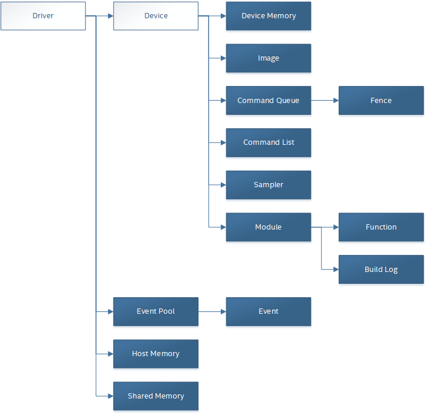
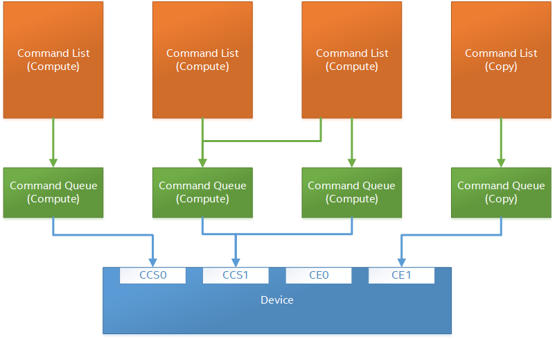

Core Programming Guide¶
Drivers and Devices¶
Drivers¶
A driver represents a collection of physical devices in the system using the same Level-Zero driver.
The application may query the number of Level-Zero drivers installed on the system and the properties of each driver.
More than one driver may be available in the system. For example, one driver may support two GPUs from one vendor, another driver supports a GPU from a different vendor, and finally a different driver may support an FPGA.
A driver is primarily used to allocate and manage resources that are used by multiple devices.
Memory is not implicitly shared across all devices supported by a driver. However, it is available to be explicitly shared.
Device¶
A device represents a physical device in the system that support Level-Zero.
The application may query the number devices supported by a driver.
The application is responsible for sharing memory and explicit submission and synchronization across multiple devices.
Device may expose sub-devices that allow finer-grained control of physical or logical partitions of a device.
The following diagram illustrates the relationship between the driver, device and other objects described in this document.
Initialization and Discovery¶
The driver must be initialized by calling Init before any other function. This function will load and initialize all Level-Zero driver(s) in the system for all threads in the current process. Simultaneous calls to ::zeInit are thread-safe and only one instance of driver(s) will be loaded per-process. This function will allow queries of the available driver instances in the system.
The following pseudo-code demonstrates a basic initialization and device discovery sequence:
// Initialize the driver
zeInit(ZE_INIT_FLAG_NONE);
// Discover all the driver instances
uint32_t driverCount = 0;
zeDriverGet(&driverCount, nullptr);
ze_driver_handle_t* allDrivers = allocate(driverCount * sizeof(ze_driver_handle_t));
zeDriverGet(&driverCount, allDrivers);
// Find a driver instance with a GPU device
ze_driver_handle_t hDriver = nullptr;
ze_device_handle_t hDevice = nullptr;
for(i = 0; i < driverCount; ++i) {
uint32_t deviceCount = 0;
zeDeviceGet(allDrivers[i], &deviceCount, nullptr);
ze_device_handle_t* allDevices = allocate(deviceCount * sizeof(ze_device_handle_t));
zeDeviceGet(allDrivers[i], &deviceCount, allDevices);
for(d = 0; d < deviceCount; ++d) {
ze_device_properties_t device_properties;
zeDeviceGetProperties(allDevices[d], &device_properties);
if(ZE_DEVICE_TYPE_GPU == device_properties.type) {
hDriver = allDrivers[i];
hDevice = allDevices[d];
break;
}
}
free(allDevices);
if(nullptr != hDriver) {
break;
}
}
free(allDrivers);
if(nullptr == hDevice)
return; // no GPU devices found
...
Memory and Images¶
There are two types of allocations:
Memory - linear, unformatted allocations for direct access from both the host and device.
Images - non-linear, formatted allocations for direct access from the device.
Memory¶
Linear, unformatted memory allocations are represented as pointers in the host application. A pointer on the host has the same size as a pointer on the device.
Types¶
Three types of allocations are supported. The type of allocation describes the ownership of the allocation:
1. Host allocations are owned by the host and are intended to be allocated out of system memory. Host allocations are accessible by the host and one or more devices. The same pointer to a host allocation may be used on the host and all supported devices; they have address equivalence. Host allocations are not expected to migrate between system memory and device local memory. Host allocations trade off wide accessibility and transfer benefits for potentially higher per-access costs, such as over PCI express.
2. Device allocations are owned by a specific device and are intended to be allocated out of device local memory, if present. Device allocations generally trade off access limitations for higher performance. With very few exceptions, device allocations may only be accessed by the specific device that they are allocated on, or copied to a host or another device allocation. The same pointer to a device allocation may be used on any supported device.
3. Shared allocations share ownership and are intended to migrate between the host and one or more devices. Shared allocations are accessible by at least the host and an associated device. Shared allocations may be accessed by other devices in some cases. Shared allocations trade off transfer costs for per-access benefits. The same pointer to a shared allocation may be used on the host and all supported devices.
A Shared System allocation is a sub-class of a Shared
allocation, where the memory is allocated by a system allocator - such
as malloc or new - rather than by an allocation API. Shared
system allocations have no associated device - they are inherently
cross-device. Like other shared allocations, shared system allocations
are intended to migrate between the host and supported devices, and the
same pointer to a shared system allocation may be used on the host and
all supported devices.
In summary:
Name |
Initial Location |
Accessible By |
Migratable To |
||
|---|---|---|---|---|---|
Host |
Host |
Host |
Yes |
Host |
N/A |
Any Device |
Yes (perhaps over PCIe) |
Device |
No |
||
Device |
Specific Device |
Host |
No |
Host |
No |
Specific Device |
Yes |
Device |
N/A |
||
Another Device |
Optional (may require p2p) |
Another Device |
No |
||
Shared |
Host, Specific Device, or Unspecified |
Host |
Yes |
Host |
Yes |
Specific Device |
Yes |
Device |
Yes |
||
Another Device |
Optional (may require p2p) |
Another Device |
Optional |
||
Shared System |
Host |
Host |
Yes |
Host |
Yes |
Device |
Yes |
Device |
Yes |
Devices may support different capabilities for each type of allocation. Supported capabilities are:
::ZE_MEMORY_ACCESS - if a device supports access (read or write) to allocations of the specified type.
::ZE_MEMORY_ATOMIC_ACCESS - if a device support atomic operations on allocations of the specified type. Atomic operations may include relaxed consistency read-modify-write atomics and atomic operations that enforce memory consistency for non-atomic operations.
::ZE_MEMORY_CONCURRENT_ACCESS - if a device supports concurrent access to allocations of the specified type. Concurrent access may be from another device that supports concurrent access, or from the host. Devices that support concurrent access but do not support concurrent atomic access must write to unique non-overlapping memory locations to avoid data races and hence undefined behavior.
::ZE_MEMORY_CONCURRENT_ATOMIC_ACCESS - if a device supports concurrent atomic operations on allocations of the specified type. Concurrent atomic operations may be from another device that supports concurrent atomic access, or from the host. Devices that support concurrent atomic access may use atomic operations to enforce memory consistency with other devices that support concurrent atomic access, or with the host.
Some devices may oversubscribe some shared allocations. When and how such oversubscription occurs, including which allocations are evicted when the working set changes, are considered implementation details.
The required matrix of capabilities are:
Allocation Type |
Access |
Atomic Access |
Concurrent Access |
Concurrent Atomic Access |
|---|---|---|---|---|
Host |
Required |
Optional |
Optional |
Optional |
Device |
Required |
Optional |
Optional |
Optional |
Shared |
Required |
Optional |
Optional |
Optional |
Shared (Cross-Device) |
Optional |
Optional |
Optional |
Optional |
Shared System (Cross-Device) |
Optional |
Optional |
Optional |
Optional |
Cache Hints, Prefetch, and Memory Advice¶
Cacheability hints may be provided via separate host and device allocation flags when memory is allocated.
Shared allocations may be prefetched to a supporting device via the ::zeCommandListAppendMemoryPrefetch API. Prefetching may allow memory transfers to be scheduled concurrently with other computations and may improve performance.
Additionally, an application may provide memory advice for a shared allocation via the ::zeCommandListAppendMemAdvise API, to override driver heuristics or migration policies. Memory advice may avoid unnecessary or unprofitable memory transfers and may improve performance.
Both prefetch and memory advice are asynchronous operations that are appended into command lists.
Images¶
An image is used to store multi-dimensional and format-defined memory for optimal device access. An image’s contents can be copied to and from other images, as well as host-accessible memory allocations. This is the only method for host access to the contents of an image. This methodology allows for device-specific encoding of image contents (e.g., tile swizzle patterns, lossless compression, etc.) and avoids exposing these details in the API in a backwards compatible fashion.
// Specify single component FLOAT32 format
ze_image_format_desc_t formatDesc = {
ZE_IMAGE_FORMAT_LAYOUT_32, ZE_IMAGE_FORMAT_TYPE_FLOAT,
ZE_IMAGE_FORMAT_SWIZZLE_R, ZE_IMAGE_FORMAT_SWIZZLE_0, ZE_IMAGE_FORMAT_SWIZZLE_0, ZE_IMAGE_FORMAT_SWIZZLE_1
};
ze_image_desc_t imageDesc = {
ZE_IMAGE_DESC_VERSION_CURRENT,
ZE_IMAGE_FLAG_PROGRAM_READ,
ZE_IMAGE_TYPE_2D,
formatDesc,
128, 128, 0, 0, 0
};
ze_image_handle_t hImage;
zeImageCreate(hDevice, &imageDesc, &hImage);
// upload contents from host pointer
zeCommandListAppendImageCopyFromMemory(hCommandList, hImage, nullptr, pImageData, nullptr);
...
Device Cache Settings¶
There are two methods for device and kernel cache control:
Cache Size Configuration: Ability to configure larger size for SLM vs Data globally for Device or per Kernel instance.
Runtime Hint/preference for application to allow access to be Cached or not in Device Caches. For GPU device this is provided via two ways:
During Image creation via Flag
Kernel instruction
The following pseudo-code demonstrates a basic sequence for Cache size configuration:
// Large SLM for Intermediate and Last Level cache.
// Note: The intermediate cache setting is applied to each kernel. Last level is applied for the device.
zeKernelSetIntermediateCacheConfig(hKernel, ZE_CACHE_CONFIG_LARGE_SLM);
zeDeviceSetLastLevelCacheConfig(hDevice, ZE_CACHE_CONFIG_LARGE_SLM);
...
Command Queues and Command Lists¶
The following are the motivations for separating a command queue from a command list:
Command queues are mostly associated with physical device properties, such as the number of input streams.
Command queues provide (near) zero-latency access to the device.
Command lists are mostly associated with Host threads for simultaneous construction.
Command list appending can occur independently of command queue submission.
Command list submission can occur to more than one command queue.
The following diagram illustrates the hierarchy of command lists and command queues to the device:
Command Queues¶
A command queue represents a logical input stream to the device, tied to a physical input stream via an ordinal at creation time.
Creation¶
The application may explicitly bind the command queue to a physical input stream, or allow the driver to choose dynamically, based on usage.
Multiple command queues may be created that use the same physical input stream. For example, an application may create a command queue per Host thread with different scheduling priorities.
However, because each command queue allocates a logical hardware context, an application should avoid creating multiple command queues for the same physical input stream with the same priority due to possible performance penalties with hardware context switching.
The maximum number of command queues an application can create is limited by device-specific resources; e.g., the maximum number of logical hardware contexts supported by the device. This can be queried from ::ze_device_properties_t.maxCommandQueues.
The maximum number of simultaneous compute command queues per device is queried from ::ze_device_properties_t.numAsyncComputeEngines.
The maximum number of simultaneous copy command queues per device is queried from ::ze_device_properties_t.numAsyncCopyEngines.
All command lists executed on a command queue are guaranteed to only execute on its single, physical input stream; e.g., copy commands in a compute command list / queue will execute via the compute engine, not the copy engine.
The following pseudo-code demonstrates a basic sequence for creation of command queues:
// Create a command queue
ze_command_queue_desc_t commandQueueDesc = {
ZE_COMMAND_QUEUE_DESC_VERSION_CURRENT,
ZE_COMMAND_QUEUE_FLAG_NONE,
ZE_COMMAND_QUEUE_MODE_DEFAULT,
ZE_COMMAND_QUEUE_PRIORITY_NORMAL,
0
};
ze_command_queue_handle_t hCommandQueue;
zeCommandQueueCreate(hDevice, &commandQueueDesc, &hCommandQueue);
...
Execution¶
Command lists submitted to a command queue are immediately executed in a fifo manner.
Command queue submission is free-treaded, allowing multiple Host threads to share the same command queue.
If multiple Host threads enter the same command queue simultaneously, then execution order is undefined.
Command lists created with ::ZE_COMMAND_LIST_FLAG_COPY_ONLY may only be submitted to command queues created with ::ZE_COMMAND_QUEUE_FLAG_COPY_ONLY.
Destruction¶
The application is responsible for making sure the device is not currently executing from a command queue before it is deleted. This is typically done by tracking command queue fences, but may also be handled by calling ::zeCommandQueueSynchronize.
Command Lists¶
A command list represents a sequence of commands for execution on a command queue.
Creation¶
A command list is created for a device to allow device-specific appending of commands.
A command list can be copied to create another command list. The application may use this to copy a command list for use on a different device.
Appending¶
There is no implicit binding of command lists to Host threads. Therefore, an application may share a command list handle across multiple Host threads. However, the application is responsible for ensuring that multiple Host threads do not access the same command list simultaneously.
By default, commands are executed in the same order in which they are appended. However, an application may allow the driver to optimize the ordering by using ::ZE_COMMAND_LIST_FLAG_RELAXED_ORDERING. Reordering is guaranteed to be only occur between barriers and synchronization primitives.
By default, commands submitted to a command list are optimized for execution by balancing both device throughput and Host latency. For very low-level latency usage-models, applications should use immediate command lists. For usage-models where maximum throughput is desired, applications should use ::ZE_COMMAND_LIST_FLAG_MAXIMIZE_THROUGHPUT.
By default, commands submitted to a command list may be optimized by the driver to fully exploit the concurrency of the device by distributing commands across multiple engines and/or sub-devices. If the application prefers to opt-out of these optimizations, such as when the application plans to perform this distribution itself, then it should use ::ZE_COMMAND_LIST_FLAG_EXPLICIT_ONLY.
The following pseudo-code demonstrates a basic sequence for creation of command lists:
// Create a command list
ze_command_list_desc_t commandListDesc = {
ZE_COMMAND_LIST_DESC_VERSION_CURRENT,
ZE_COMMAND_LIST_FLAG_NONE
};
ze_command_list_handle_t hCommandList;
zeCommandListCreate(hDevice, &commandListDesc, &hCommandList);
...
Submission¶
There is no implicit association between a command list and a command queue. Therefore, a command list may be submitted to any, or multiple command queues. However, if a command list is meant to be submitted to a copy-only command queue then the ::ZE_COMMAND_LIST_FLAG_COPY_ONLY must be set at creation.
The application is responsible for calling close before submission to a command queue.
Command lists do not inherit state from other command lists executed on the same command queue. i.e. each command list begins execution in its own default state.
A command list may be submitted multiple times. It is up to the application to ensure that the command list can be executed multiple times. Events, for example, must be explicitly reset prior to re-execution.
The following pseudo-code demonstrates submission of commands to a command queue, via a command list:
...
// finished appending commands (typically done on another thread)
zeCommandListClose(hCommandList);
// Execute command list in command queue
zeCommandQueueExecuteCommandLists(hCommandQueue, 1, &hCommandList, nullptr);
// synchronize host and device
zeCommandQueueSynchronize(hCommandQueue, UINT32_MAX);
// Reset (recycle) command list for new commands
zeCommandListReset(hCommandList);
...
Recycling¶
A command list may be recycled to avoid the overhead of frequent creation and destruction.
The application is responsible for making sure the device is not currently executing from a command list before it is reset. This should be handled by tracking a completion event associated with the command list.
The application is responsible for making sure the device is not currently executing from a command list before it is deleted. This should be handled by tracking a completion event associated with the command list.
Low-Latency Immediate Command Lists¶
A special type of command list can be used for very low-latency submission usage-models.
An immediate command list is both a command list and an implicit command queue.
An immediate command list is created using a command queue descriptor.
Commands submitted to an immediate command list are immediately executed on the device.
An immediate command list is not required to be closed or reset. However, usage will be honored, and expected behaviors will be followed.
The following pseudo-code demonstrates a basic sequence for creation and usage of immediate command lists:
// Create an immediate command list
ze_command_queue_desc_t commandQueueDesc = {
ZE_COMMAND_QUEUE_DESC_VERSION_CURRENT,
ZE_COMMAND_QUEUE_FLAG_NONE,
ZE_COMMAND_QUEUE_MODE_DEFAULT,
ZE_COMMAND_QUEUE_PRIORITY_NORMAL,
0
};
ze_command_list_handle_t hCommandList;
zeCommandListCreateImmediate(hDevice, &commandQueueDesc, &hCommandList);
// Immediately submit a kernel to the device
zeCommandListAppendLaunchKernel(hCommandList, hKernel, &launchArgs, nullptr, 0, nullptr);
...
Synchronization Primitives¶
There are two types of synchronization primitives:
Fences - used to communicate to the host that command queue execution has completed.
Events - used as fine-grain host-to-device, device-to-host or device-to-device execution and memory dependencies.
The following diagram illustrates the relationship of capabilities of these types of synchronization primitives:

The following are the motivations for separating the different types of synchronization primitives:
Allows device-specific optimizations for certain types of primitives:
fences may share device memory with all other fences within the same command queue.
events may be implemented using pipelined operations as part of the program execution.
fences are implicit, coarse-grain execution and memory barriers.
events optionally cause fine-grain execution and memory barriers.
Allows distinction on which type of primitive may be shared across devices.
Generally. Events are generic synchronization primitives that can be used across many different usage-models, including those of fences. However, this generality comes with some cost in memory overhead and efficiency.
Fences¶
A fence is a heavyweight synchronization primitive used to communicate to the host that command list execution within a command queue has completed.
A fence is associated with a single command queue.
A fence can only be signaled from a device’s command queue (e.g. between execution of command lists) and can only be waited upon from the host.
A fence guarantees both execution completion and memory coherency, across the device and host, prior to being signaled.
A fence only has two states: not signaled and signaled.
A fence can only be reset from the Host.
A fence cannot be shared across processes.
The following pseudo-code demonstrates a sequence for creation, submission and querying of a fence:
// Create fence
ze_fence_desc_t fenceDesc = {
ZE_FENCE_DESC_VERSION_CURRENT,
ZE_FENCE_FLAG_NONE
};
ze_fence_handle_t hFence;
zeFenceCreate(hCommandQueue, &fenceDesc, &hFence);
// Execute a command list with a signal of the fence
zeCommandQueueExecuteCommandLists(hCommandQueue, 1, &hCommandList, hFence);
// Wait for fence to be signaled
zeFenceHostSynchronize(hFence, UINT32_MAX);
zeFenceReset(hFence);
...
The primary usage model(s) for fences are to notify the Host when a command list has finished execution to allow:
Recycling of memory and images
Recycling of command lists
Recycling of other synchronization primitives
Explicit memory residency.
The following diagram illustrates fences signaled after command lists on execution:

Events¶
An event is used to communicate fine-grain host-to-device, device-to-host or device-to-device dependencies from within a command list.
An event can be:
signaled from within a device’s command list and waited upon within the same command list
signaled from within a device’s command list and waited upon from the host, another command queue or another device
signaled from the host, and waited upon from within a device’s command list.
An event only has two states: not signaled and signaled.
An event doesn’t implicitly reset. Signaling a signaled event (or resetting an unsignaled event) is valid and has no effect on the state of the event.
An event can be explicitly reset from the Host or device.
An event can be appended into multiple command lists simultaneously.
An event can be shared across devices and processes.
An event can invoke an execution and/or memory barrier; which should be used sparingly to avoid device underutilization.
There are no protections against events causing deadlocks, such as circular waits scenarios.
These problems are left to the application to avoid.
An event intended to be signaled by the host, another command queue or another device after command list submission to a command queue may prevent subsequent forward progress within the command queue itself.
This can create bubbles in the pipeline or deadlock situations if not correctly scheduled.
An event pool is used for creation of individual events:
An event pool reduces the cost of creating multiple events by allowing underlying device allocations to be shared by events with the same properties
An event pool can be shared via IPC; allowing sharing blocks of events rather than sharing each individual event
The following pseudo-code demonstrates a sequence for creation and submission of an event:
// Create event pool
ze_event_pool_desc_t eventPoolDesc = {
ZE_EVENT_POOL_DESC_VERSION_CURRENT,
ZE_EVENT_POOL_FLAG_HOST_VISIBLE, // all events in pool are visible to Host
1
};
ze_event_pool_handle_t hEventPool;
zeEventPoolCreate(hDriver, &eventPoolDesc, 0, nullptr, &hEventPool);
ze_event_desc_t eventDesc = {
ZE_EVENT_DESC_VERSION_CURRENT,
0,
ZE_EVENT_SCOPE_FLAG_NONE,
ZE_EVENT_SCOPE_FLAG_HOST // ensure memory coherency across device and Host after event completes
};
ze_event_handle_t hEvent;
zeEventCreate(hEventPool, &eventDesc, &hEvent);
// Append a signal of an event into the command list after the kernel executes
zeCommandListAppendLaunchKernel(hCommandList, hKernel1, &launchArgs, hEvent, 0, nullptr);
// Execute the command list with the signal
zeCommandQueueExecuteCommandLists(hCommandQueue, 1, &hCommandList, nullptr);
...
The following diagram illustrates an event being signaled between kernels within a command list:

Barriers¶
There are two types of barriers:
Execution Barriers - used to communicate execution dependencies between commands within a command list or across command queues, devices and/or Host.
Memory Barriers - used to communicate memory coherency dependencies between commands within a command list or across command queues, devices and/or Host.
The following pseudo-code demonstrates a sequence for submission of a brute-force execution and global memory barrier:
zeCommandListAppendLaunchKernel(hCommandList, hKernel, &launchArgs, nullptr, 0, nullptr);
// Append a barrier into a command list to ensure hKernel1 completes before hKernel2 begins
zeCommandListAppendBarrier(hCommandList, nullptr, 0, nullptr);
zeCommandListAppendLaunchKernel(hCommandList, hKernel, &launchArgs, nullptr, 0, nullptr);
...
Execution Barriers¶
Commands executed on a command list are only guaranteed to start in the same order in which they are submitted; i.e.?there is no implicit definition of the order of completion.
Fences provide implicit, coarse-grain control to indicate that all previous commands must complete prior to the fence being signaled.
Events provide explicit, fine-grain control over execution dependencies between commands; allowing more opportunities for concurrent execution and higher device utilization.
The following pseudo-code demonstrates a sequence for submission of a fine-grain execution-only dependency using events:
ze_event_desc_t event1Desc = {
ZE_EVENT_DESC_VERSION_CURRENT,
0,
ZE_EVENT_SCOPE_FLAG_NONE, // no memory/cache coherency required on signal
ZE_EVENT_SCOPE_FLAG_NONE // no memory/cache coherency required on wait
};
ze_event_handle_t hEvent1;
zeEventCreate(hEventPool, &event1Desc, &hEvent1);
// Ensure hKernel1 completes before signaling hEvent1
zeCommandListAppendLaunchKernel(hCommandList, hKernel1, &launchArgs, hEvent1, 0, nullptr);
// Ensure hEvent1 is signaled before starting hKernel2
zeCommandListAppendLaunchKernel(hCommandList, hKernel2, &launchArgs, nullptr, 1, &hEvent1);
...
Memory Barriers¶
Commands executed on a command list are not guaranteed to maintain memory coherency with other commands; i.e. there is no implicit memory or cache coherency.
Fences provide implicit, coarse-grain control to indicate that all caches and memory are coherent across the device and Host prior to the fence being signaled.
Events provide explicit, fine-grain control over cache and memory coherency dependencies between commands; allowing more opportunities for concurrent execution and higher device utilization.
The following pseudo-code demonstrates a sequence for submission of a fine-grain memory dependency using events:
ze_event_desc_t event1Desc = {
ZE_EVENT_DESC_VERSION_CURRENT,
0,
ZE_EVENT_SCOPE_FLAG_DEVICE, // ensure memory coherency across device before event signaled
ZE_EVENT_SCOPE_FLAG_NONE
};
ze_event_handle_t hEvent1;
zeEventCreate(hEventPool, &event1Desc, &hEvent1);
// Ensure hKernel1 memory writes are fully coherent across the device before signaling hEvent1
zeCommandListAppendLaunchKernel(hCommandList, hKernel1, &launchArgs, hEvent1, 0, nullptr);
// Ensure hEvent1 is signaled before starting hKernel2
zeCommandListAppendLaunchKernel(hCommandList, hKernel2, &launchArgs, nullptr, 1, &hEvent1);
...
Range-based Memory Barriers¶
Range-based memory barriers provide explicit control of which cachelines require coherency.
The following pseudo-code demonstrates a sequence for submission of a range-based memory barrier:
zeCommandListAppendLaunchKernel(hCommandList, hKernel1, &launchArgs, nullptr, 0, nullptr);
// Ensure memory range is fully coherent across the device after hKernel1 and before hKernel2
zeCommandListAppendMemoryRangesBarrier(hCommandList, 1, &size, &ptr, nullptr, 0, nullptr);
zeCommandListAppendLaunchKernel(hCommandList, hKernel2, &launchArgs, nullptr, 0, nullptr);
...
Modules and Kernels¶
There are multiple levels of constructs needed for executing kernels on the device:
Modules represent a single translation unit that consists of kernels that have been compiled together.
Kernels represent the kernel within the module that will be launched directly from a command list.
The following diagram provides a high-level overview of the major parts of the system.

Modules¶
Modules can be created from an IL or directly from native format using ::zeModuleCreate.
::zeModuleCreate takes a format argument that specifies the input format.
::zeModuleCreate performs a compilation step when format is IL.
The following pseudo-code demonstrates a sequence for creating a module from an OpenCL kernel:
__kernel void image_scaling( __read_only image2d_t src_img,
__write_only image2d_t dest_img,
uint WIDTH, // resized width
uint HEIGHT ) // resized height
{
int2 coor = (int2)( get_global_id(0), get_global_id(1) );
float2 normCoor = convert_float2(coor) / (float2)( WIDTH, HEIGHT );
float4 color = read_imagef( src_img, SMPL_PREF, normCoor );
write_imagef( dest_img, coor, color );
}
...
// OpenCL C kernel has been compiled to SPIRV IL (pImageScalingIL)
ze_module_desc_t moduleDesc = {
ZE_MODULE_DESC_VERSION_CURRENT,
ZE_MODULE_FORMAT_IL_SPIRV,
ilSize,
pImageScalingIL,
nullptr,
nullptr
};
ze_module_handle_t hModule;
zeModuleCreate(hDevice, &moduleDesc, &hModule, nullptr);
...
Module Build Options¶
Module build options can be passed with ::ze_module_desc_t as a string.
Build Option |
Description |
Default |
Device Support |
|---|---|---|---|
-ze-opt-disable |
Disable optimizations. |
Disabled |
All |
-ze-opt-greater-than-4GB-buffer-required |
Use 64-bit offset calculations for buffers. |
Disabled |
GPU |
-ze-opt-large-register-file |
Increase number of registers available to threads. |
Disabled |
GPU |
Module Specialization Constants¶
SPIR-V supports specialization constants that allow certain constants to be updated to new values during runtime execution. Each specialization constant in SPIR-V has an identifier and default value. The ::zeModuleCreate function allows for an array of constants and their corresponding identifiers to be passed in to override the constants in the SPIR-V module.
// Spec constant overrides for group size.
ze_module_constants_t specConstants = {
3,
pGroupSizeIds,
pGroupSizeValues
};
// OpenCL C kernel has been compiled to SPIRV IL (pImageScalingIL)
ze_module_desc_t moduleDesc = {
ZE_MODULE_DESC_VERSION_CURRENT,
ZE_MODULE_FORMAT_IL_SPIRV,
ilSize,
pImageScalingIL,
nullptr,
&specConstants
};
ze_module_handle_t hModule;
zeModuleCreate(hDevice, &moduleDesc, &hModule, nullptr);
...
Note: Specialization constants are only handled at module create time and therefore if you need to change them then you’ll need to compile a new module.
Module Build Log¶
The ::zeModuleCreate function can optionally generate a build log object ::ze_module_build_log_handle_t.
...
ze_module_build_log_handle_t buildlog;
ze_result_t result = zeModuleCreate(hDevice, &desc, &module, &buildlog);
// Only save build logs for module creation errors.
if (result != ZE_RESULT_SUCCESS)
{
size_t szLog = 0;
zeModuleBuildLogGetString(buildlog, &szLog, nullptr);
char_t* strLog = allocate(szLog);
zeModuleBuildLogGetString(buildlog, &szLog, strLog);
// Save log to disk.
...
free(strLog);
}
zeModuleBuildLogDestroy(buildlog);
Module Caching with Native Binaries¶
Disk caching of modules is not supported by the driver. If a disk cache for modules is desired, then it is the responsibility of the application to implement this using ::zeModuleGetNativeBinary.
...
// compute hash for pIL and check cache.
...
if (cacheUpdateNeeded)
{
size_t szBinary = 0;
zeModuleGetNativeBinary(hModule, &szBinary, nullptr);
uint8_t* pBinary = allocate(szBinary);
zeModuleGetNativeBinary(hModule, &szBinary, pBinary);
// cache pBinary for corresponding IL
...
free(pBinary);
}
Also, note that the native binary will retain all debug information that is associated with the module. This allows debug capabilities for modules that are created from native binaries.
Built-in Kernels¶
Built-in kernels are not supported but can be implemented by an upper level runtime or library using the native binary interface.
Kernels¶
A Kernel is a reference to a kernel within a module. The Kernel object supports both explicit and implicit kernel arguments along with data needed for launch.
The following pseudo-code demonstrates a sequence for creating a kernel from a module:
ze_kernel_desc_t kernelDesc = {
ZE_KERNEL_DESC_VERSION_CURRENT,
ZE_KERNEL_FLAG_NONE,
"image_scaling"
};
ze_kernel_handle_t hKernel;
zeKernelCreate(hModule, &kernelDesc, &hKernel);
...
Kernel Attributes and Properties¶
Use ::zeKernelSetAttribute to set attributes for a kernel object.
// Kernel performs indirect device access.
bool_t isIndirect = true;
zeKernelSetAttribute(hKernel, ZE_KERNEL_ATTR_INDIRECT_DEVICE_ACCESS, sizeof(bool_t), &isIndirect);
...
Use ::zeKernelSetAttribute to get attributes for a kernel object.
// Does kernel perform indirect device access.
zeKernelGetAttribute(hKernel, ZE_KERNEL_ATTR_INDIRECT_DEVICE_ACCESS, sizeof(bool_t), &isIndirect);
...
uint32_t strSize = 0; // Size of string + null terminator
zeKernelGetAttribute(hKernel, ZE_KERNEL_ATTR_SOURCE_ATTRIBUTE, &strSize, nullptr );
char* pAttributes = allocate(strSize);
zeKernelGetAttribute(hKernel, ZE_KERNEL_ATTR_SOURCE_ATTRIBUTE, &strSize, pAttributes );
...
See ::ze_kernel_attribute_t for more information on the “set” and “get” attributes.
Use ::zeKernelGetProperties to query invariant properties from a kernel object.
...
ze_kernel_properties_t kernelProperties;
//
zeKernelGetProperties(hKernel, &kernelProperties);
...
See ::ze_kernel_properties_t for more information for kernel properties.
Execution¶
Kernel Group Size¶
The group size for a kernel can be set using ::zeKernelSetGroupSize. If a group size is not set prior to appending a kernel into a command list then a default will be chosen. The group size can be updated over a series of append operations. The driver will copy the group size information when appending the kernel into the command list.
zeKernelSetGroupSize(hKernel, groupSizeX, groupSizeY, 1);
...
The API supports a query for suggested group size when providing the global size. This function ignores the group size that was set on the kernel using ::zeKernelSetGroupSize.
// Find suggested group size for processing image.
uint32_t groupSizeX;
uint32_t groupSizeY;
zeKernelSuggestGroupSize(hKernel, imageWidth, imageHeight, 1, &groupSizeX, &groupSizeY, nullptr);
zeKernelSetGroupSize(hKernel, groupSizeX, groupSizeY, 1);
...
Kernel Arguments¶
Kernel arguments represent only the explicit kernel arguments that are within ?brackets? e.g.?func(arg1, arg2, ?).
Use ::zeKernelSetArgumentValue to setup arguments for a kernel launch.
The AppendLaunchKernel command will make a copy the kernel arguments to send to the device.
Kernel arguments can be updated at any time and used across multiple append calls.
The following pseudo-code demonstrates a sequence for setting kernel args and launching the kernel:
// Bind arguments
zeKernelSetArgumentValue(hKernel, 0, sizeof(ze_image_handle_t), &src_image);
zeKernelSetArgumentValue(hKernel, 1, sizeof(ze_image_handle_t), &dest_image);
zeKernelSetArgumentValue(hKernel, 2, sizeof(uint32_t), &width);
zeKernelSetArgumentValue(hKernel, 3, sizeof(uint32_t), &height);
ze_group_count_t launchArgs = { numGroupsX, numGroupsY, 1 };
// Append launch kernel
zeCommandListAppendLaunchKernel(hCommandList, hKernel, &launchArgs, nullptr, 0, nullptr);
// Update image pointers to copy and scale next image.
zeKernelSetArgumentValue(hKernel, 0, sizeof(ze_image_handle_t), &src2_image);
zeKernelSetArgumentValue(hKernel, 1, sizeof(ze_image_handle_t), &dest2_image);
// Append launch kernel
zeCommandListAppendLaunchKernel(hCommandList, hKernel, &launchArgs, nullptr, 0, nullptr);
...
Kernel Launch¶
In order to launch a kernel on the device an application must call one of the CommandListAppendLaunch* functions for a command list. The most basic version of these is ::zeCommandListAppendLaunchKernel which takes a command list, kernel handle, launch arguments, and an optional synchronization event used to signal completion. The launch arguments contain thread group dimensions.
// compute number of groups to launch based on image size and group size.
uint32_t numGroupsX = imageWidth / groupSizeX;
uint32_t numGroupsY = imageHeight / groupSizeY;
ze_group_count_t launchArgs = { numGroupsX, numGroupsY, 1 };
// Append launch kernel
zeCommandListAppendLaunchKernel(hCommandList, hKernel, &launchArgs, nullptr, 0, nullptr);
The function ::zeCommandListAppendLaunchKernelIndirect allows the launch parameters to be supplied indirectly in a buffer that the device reads instead of the command itself. This allows for the previous operations on the device to generate the parameters.
ze_group_count_t* pIndirectArgs;
...
zeDriverAllocDeviceMem(hDriver, &desc, sizeof(ze_group_count_t), sizeof(uint32_t), hDevice, &pIndirectArgs);
// Append launch kernel - indirect
zeCommandListAppendLaunchKernelIndirect(hCommandList, hKernel, &pIndirectArgs, nullptr, 0, nullptr);
Cooperative Kernels¶
Cooperative kernels allow sharing of data and synchronization across all launched groups in a safe manner. To support this there is a ::zeCommandListAppendLaunchCooperativeKernel that allows launching groups that can cooperate with each other. Finally, there is a ::zeKernelSuggestMaxCooperativeGroupCount function that suggests a maximum group count size that the device supports.
Sampler¶
The API supports Sampler objects that represent state needed for sampling images from within kernels. The ::zeSamplerCreate function takes a sampler descriptor (::ze_sampler_desc_t):
Sampler Field |
Description |
|---|---|
Address Mode |
Determines how out-of-bounds accessse are handled. See ::ze_sampler_address_mode_t. |
Filter Mode |
Specifies which filtering mode to use. See ::ze_sampler_filter_mode_t |
Normalized |
Specifies whether coordinates for addressing image are normalized [0,1] or not. |
The following is sample for code creating a sampler object and passing it as a kernel argument:
// Setup sampler for linear filtering and clamp out of bounds accesses to edge.
ze_sampler_desc_t desc = {
ZE_SAMPLER_DESC_VERSION_CURRENT,
ZE_SAMPLER_ADDRESS_MODE_CLAMP,
ZE_SAMPLER_FILTER_MODE_LINEAR,
false
};
ze_sampler_handle_t sampler;
zeSamplerCreate(hDevice, &desc, &sampler);
...
// The sampler can be passed as a kernel argument.
zeKernelSetArgumentValue(hKernel, 0, sizeof(ze_sampler_handle_t), &sampler);
// Append launch kernel
zeCommandListAppendLaunchKernel(hCommandList, hKernel, &launchArgs, nullptr, 0, nullptr);
Advanced¶
Sub-Device Support¶
The API allows support for sub-devices which can enable finer grained control of scheduling and memory allocation to a sub-partition of the device. There are functions to query and obtain a sub-device but outside of these functions there are no distinction between sub-devices and devices.
Use ::zeDeviceGetSubDevices to confirm sub-devices are supported and to obtain a sub-device handle. There are additional device properties in ::ze_device_properties_t for sub-devices to confirm a device is a sub-device and to query the sub-device id. This is useful when needing to pass a sub-device handle to another library.
To allocate memory and dispatch tasks to a specific sub-device then obtain the sub-device handle and use this with memory and command queue/lists APIs. Local memory allocation will be placed in the local memory that is attached to the sub-device. An out-of-memory error indicates that there is not enough local sub-device memory for the allocation. The driver will not try and spill sub-device allocations over to another sub-device’s local memory. However, the application can retry using the parent device and the driver will decide where to place the allocation.
One thing to note is that the ordinal that is used when creating a command queue is relative to the sub-device. This ordinal specifies which physical compute queue on the device or sub-device to map the logical queue to. The application needs to query ::ze_device_properties_t.numAsyncComputeEngines from the sub-device to determine how to set this ordinal. See ::ze_command_queue_desc_t for more details.
A 16-byte unique device identifier (uuid) can be obtained for a device or sub-device using ::zeDeviceGetProperties.
// Query for all sub-devices of the device
uint32_t subdeviceCount = 0;
zeDeviceGetSubDevices(hDevice, &subdeviceCount, nullptr);
ze_device_handle_t* allSubDevices = allocate(subdeviceCount * sizeof(ze_device_handle_t));
zeDeviceGetSubDevices(hDevice, &subdeviceCount, &allSubDevices);
// Desire is to allocate and dispatch work to sub-device 2.
assert(subdeviceCount >= 3);
ze_device_handle_t hSubdevice = allSubDevices[2];
// Query sub-device properties.
ze_device_properties_t subdeviceProps;
zeDeviceGetProperties(hSubdevice, &subdeviceProps);
assert(subdeviceProps.isSubdevice == true); // Ensure that we have a handle to a sub-device.
assert(subdeviceProps.subdeviceId == 2); // Ensure that we have a handle to the sub-device we asked for.
void* pMemForSubDevice2;
zeDriverAllocDeviceMem(hDriver, &desc, memSize, sizeof(uint32_t), hSubdevice, &pMemForSubDevice2);
...
...
// Check that cmd queue ordinal that was chosen is valid.
assert(desc.ordinal < subdeviceProps.numAsyncComputeEngines);
ze_command_queue_handle_t commandQueueForSubDevice2;
zeCommandQueueCreate(hSubdevice, &desc, &commandQueueForSubDevice2);
...
Device Residency¶
For devices that do not support page-faults, the driver must ensure that all pages that will be accessed by the kernel are resident before program execution. This can be determined by checking ::ze_device_properties_t.onDemandPageFaultsSupported.
In most cases, the driver implicitly handles residency of allocations for device access. This can be done by inspecting API parameters, including kernel arguments. However, in cases where the devices does not support page-faulting and the driver is incapable of determining whether an allocation will be accessed by the device, such as multiple levels of indirection, there are two methods available:
The application may set the ::ZE_KERNEL_FLAG_FORCE_RESIDENCY flag during program creation to force all device allocations to be resident during execution.
in addition, the application should indicate the type of allocations that will be indirectly accessed using ::ze_kernel_attribute_t (ZE_KERNEL_ATTR_INDIRECT_HOST_ACCESS, DEVICE_ACCESS, or SHARED_ACCESS).
if the driver is unable to make all allocations resident, then the call to ::zeCommandQueueExecuteCommandLists will return ZE_RESULT_ERROR_OUT_OF_DEVICE_MEMORY
Explcit ::zeDeviceMakeMemoryResident APIs are included for the application to dynamically change residency as needed. (Windows-only)
if the application over-commits device memory, then a call to ::zeDeviceMakeMemoryResident will return ZE_RESULT_ERROR_OUT_OF_DEVICE_MEMORY
If the application does not properly manage residency for these cases then the device may experience unrecoverable page-faults.
The following pseudo-code demonstrate a sequence for using coarse-grain residency control for indirect arguments:
struct node {
node* next;
};
node* begin = nullptr;
zeDriverAllocHostMem(hDriver, &desc, sizeof(node), 1, &begin);
zeDriverAllocHostMem(hDriver, &desc, sizeof(node), 1, &begin->next);
zeDriverAllocHostMem(hDriver, &desc, sizeof(node), 1, &begin->next->next);
// 'begin' is passed as kernel argument and appended into command list
bool hasIndirectHostAccess = true;
zeKernelSetAttribute(hFuncArgs, ZE_KERNEL_ATTR_INDIRECT_HOST_ACCESS, sizeof(bool), &hasIndirectHostAccess);
zeKernelSetArgumentValue(hKernel, 0, sizeof(node*), &begin);
zeCommandListAppendLaunchKernel(hCommandList, hKernel, &launchArgs, nullptr, 0, nullptr);
...
zeCommandQueueExecuteCommandLists(hCommandQueue, 1, &hCommandList, nullptr);
...
The following pseudo-code demonstrate a sequence for using fine-grain residency control for indirect arguments:
struct node {
node* next;
};
node* begin = nullptr;
zeDriverAllocHostMem(hDriver, &desc, sizeof(node), 1, &begin);
zeDriverAllocHostMem(hDriver, &desc, sizeof(node), 1, &begin->next);
zeDriverAllocHostMem(hDriver, &desc, sizeof(node), 1, &begin->next->next);
// 'begin' is passed as kernel argument and appended into command list
zeKernelSetArgumentValue(hKernel, 0, sizeof(node*), &begin);
zeCommandListAppendLaunchKernel(hCommandList, hKernel, &launchArgs, nullptr, 0, nullptr);
...
// Make indirect allocations resident before enqueuing
zeDeviceMakeMemoryResident(hDevice, begin->next, sizeof(node));
zeDeviceMakeMemoryResident(hDevice, begin->next->next, sizeof(node));
zeCommandQueueExecuteCommandLists(hCommandQueue, 1, &hCommandList, hFence);
// wait until complete
zeFenceHostSynchronize(hFence, UINT32_MAX);
// Finally, evict to free device resources
zeDeviceEvictMemory(hDevice, begin->next, sizeof(node));
zeDeviceEvictMemory(hDevice, begin->next->next, sizeof(node));
...
OpenCL Interoperability¶
Interoperability with OpenCL is currently only supported from OpenCL to Level-Zero for a subset of types. The APIs are designed to be OS agnostics and allow implementations to optimize for unified device drivers; while allowing less optimal interoperability across different device types and/or vendors.
There are three OpenCL types that can be shared for interoperability:
cl_mem - an OpenCL buffer object
cl_program - an OpenCL program object
cl_command_queue - an OpenCL command queue object
cl_mem¶
OpenCL buffer objects may be registered for use as a Level-Zero device memory allocation. Registering an OpenCL buffer object with Level-Zero merely obtains a pointer to the underlying device memory allocation and does not alter the lifetime of the device memory underlying the OpenCL buffer object. Freeing the Level-Zero device memory allocation effectively “un-registers” the allocation from Level-Zero, and should be performed before the OpenCL buffer object is destroyed. Using the Level-Zero device memory allocation after destroying its associated OpenCL buffer object will result in undefined behavior.
Applications are responsible for enforcing memory consistency for shared buffer objects using existing OpenCL and/or Level-Zero APIs.
cl_program¶
Level-Zero modules are always in a compiled state and therefore prior to retrieving an ::ze_module_handle_t from a cl_program the caller must ensure the cl_program is compiled and linked.
cl_command_queue¶
Sharing OpenCL command queues provide opportunities to minimize transition costs when submitting work from an OpenCL queue followed by submitting work to Level-Zero command queue and vice-versa. Enqueuing Level-Zero command lists to Level-Zero command queues are immediately submitted to the device. OpenCL implementations, however, may not necessarily submit tasks to the device unless forced by explicit OpenCL API such as clFlush or clFinish. To minimize overhead between sharing command queues, applications must explicitly submit OpenCL command queues using clFlush, clFinish or similar operations prior to enqueuing a Level-Zero command list. Failing to explicitly submit device work may result in undefined behavior.
Sharing an OpenCL command queue doesn’t alter the lifetime of the API object. It provides knowledge for the driver to potentially reuse some internal resources which may have noticeable overhead when switching the resources.
Memory contents as reflected by any caching schemes will be consistent such that, for example, a memory write in an OpenCL command queue can be read by a subsequent Level-Zero command list without any special application action. The cost to ensure memory consistency may be implementation dependent. The performance of sharing command queues will be no worse than an application submitting work to OpenCL, calling clFinish followed by submitting a Level-Zero command list. In most cases, command queue sharing may be much more efficient.
Inter-Process Communication¶
There are two types of Inter-Process Communication (IPC) APIs for using Level-Zero allocations across processes:
Memory
Events
Memory¶
The following code examples demonstrate how to use the memory IPC APIs:
First, the allocation is made, packaged, and sent on the sending process:
void* dptr = nullptr;
zeDriverAllocDeviceMem(hDriver, &desc, size, alignment, hDevice, &dptr);
ze_ipc_mem_handle_t hIPC;
zeDriverGetMemIpcHandle(hDriver, dptr, &hIPC);
// Method of sending to receiving process is not defined by Level-Zero:
send_to_receiving_process(hIPC);
Next, the allocation is received and un-packaged on the receiving process:
// Method of receiving from sending process is not defined by Level-Zero:
ze_ipc_mem_handle_t hIPC;
hIPC = receive_from_sending_process();
void* dptr = nullptr;
zeDriverOpenMemIpcHandle(hDriver, hDevice, hIPC, ZE_IPC_MEMORY_FLAG_NONE, &dptr);
Each process may now refer to the same device memory allocation via its
dptr. Note, there is no guaranteed address equivalence for the values ofdptrin each process.To cleanup, first close the handle in the receiving process:
zeDriverCloseMemIpcHandle(hDriver, dptr);
Finally, free the device pointer in the sending process:
zeDriverFreeMem(hDriver, dptr);
Events¶
The following code examples demonstrate how to use the event IPC APIs:
First, the event pool is created, packaged, and sent on the sending process:
// create event pool ze_event_pool_desc_t eventPoolDesc = { ZE_EVENT_POOL_DESC_VERSION_CURRENT, ZE_EVENT_POOL_FLAG_IPC | ZE_EVENT_POOL_FLAG_HOST_VISIBLE, 10 }; ze_event_pool_handle_t hEventPool; zeEventPoolCreate(hDriver, &eventPoolDesc, 1, &hDevice, &hEventPool); // get IPC handle and send to another process ze_ipc_event_pool_handle_t hIpcEvent; zeEventPoolGetIpcHandle(hEventPool, &hIpcEventPool); send_to_receiving_process(hIpcEventPool);
Next, the event pool is received and un-packaged on the receiving process:
// get IPC handle from other process ze_ipc_event_pool_handle_t hIpcEventPool; receive_from_sending_process(&hIpcEventPool); // open event pool ze_event_pool_handle_t hEventPool; zeEventPoolOpenIpcHandle(hDriver, hIpcEventPool, &hEventPool);
Each process may now refer to the same device event allocation via its handle.
receiving process creates event at location
ze_event_handle_t hEvent; ze_event_desc_t eventDesc = { ZE_EVENT_DESC_VERSION_CURRENT, 5, ZE_EVENT_SCOPE_FLAG_NONE, ZE_EVENT_SCOPE_FLAG_HOST, // ensure memory coherency across device and Host after event signaled }; zeEventCreate(hEventPool, &eventDesc, &hEvent); // submit kernel and signal event when complete zeCommandListAppendLaunchKernel(hCommandList, hKernel, &args, hEvent, 0, nullptr); zeCommandListClose(hCommandList); zeCommandQueueExecuteCommandLists(hCommandQueue, 1, &hCommandList, nullptr);
sending process creates event at same location
ze_event_handle_t hEvent; ze_event_desc_t eventDesc = { ZE_EVENT_DESC_VERSION_CURRENT, 5, ZE_EVENT_SCOPE_FLAG_NONE, ZE_EVENT_SCOPE_FLAG_HOST, // ensure memory coherency across device and Host after event signaled }; zeEventCreate(hEventPool, &eventDesc, &hEvent); zeEventHostSynchronize(hEvent, UINT32_MAX);
Note, there is no guaranteed address equivalence for the values of
hEventin each process.To cleanup, first close the pool handle in the receiving process:
zeEventDestroy(hEvent); zeEventPoolCloseIpcHandle(&hEventPool);
Finally, free the event pool handle in the sending process:
zeEventDestroy(hEvent); zeEventPoolDestroy(hEventPool);
Peer-to-Peer Access and Queries¶
Devices may be linked together within a node by a scale-up fabric and depending on the configuration, the fabric can support atomics, compute kernel remote access, and data copies.
The following Peer-to-Peer functionalities are provided through the API:
Check for existence of peer-to-peer fabric between two devices.
::zeDeviceCanAccessPeer
Query remote memory access and atomic capabilities for peer-to-peer
::zeDeviceGetP2PProperties
Copy data between devices over peer-to-peer fabric.
::zeCommandListAppendMemoryCopy